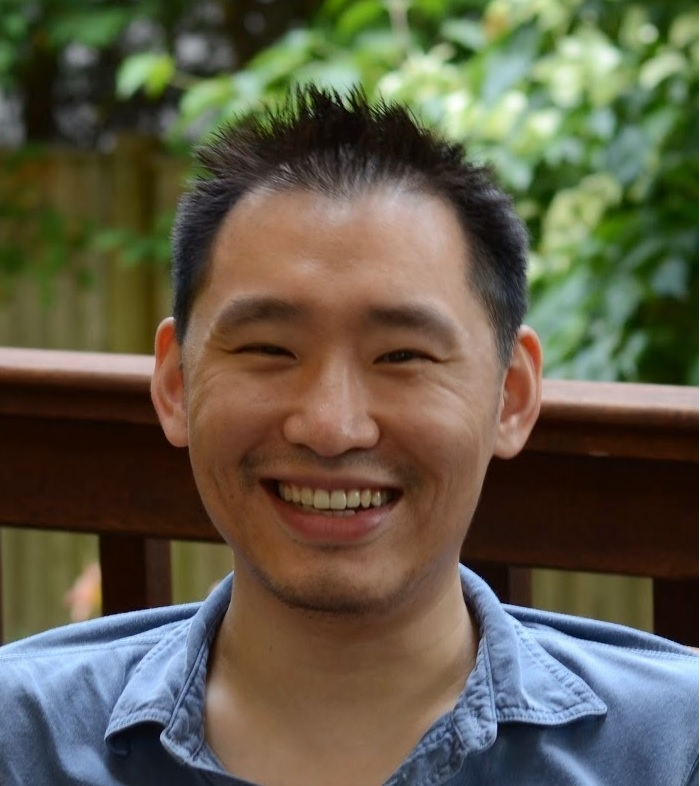

Stephen Chang
308 West Village H
Associate Research Scientist [cv] |
 |
I like extensible programming languages that support linguistic reuse. I'm specifically interested in compile-time reuse. Programmers should be able to create arbitrary compile-time systems, e.g., type systems, by reusing components from a general, expressive framework, analogous to how eDSLs typically reuse run-time components.
My dissertation explored lazy evaluation from both a theoretical and a
practical perspective.
I also hack on Racket.
Dependent Type Systems as Macros
(POPL 2020).
Stephen Chang, Michael Ballantyne, Milo Turner, William J. Bowman.
[
pdf
| ACM link
| abstract
| code (Turnstile+)
| code (Cur)
| artifact
| slides
]
Symbolic Types for Lenient Symbolic Execution
(POPL 2018).
Stephen Chang, Alex Knauth, and Emina Torlak.
[
pdf
| abstract
| code repo
| artifact instructions, VirtualBox image (2.2GB)
]
Super 8 Languages for Making Movies (Functional Pearl)
(ICFP 2017).
Leif Andersen, Stephen Chang, and Matthias Felleisen.
[
pdf
]
Type Systems as Macros
(POPL 2017).
Stephen Chang, Alex Knauth, and Ben Greenman.
[
pdf
| abstract
| code repo
| artifact instructions, VirtualBox image (2.1GB)
]
Profiling For Laziness
(POPL 2014).
Stephen Chang and Matthias Felleisen.
[
pdf
| abstract
]
Laziness By Need
(ESOP 2013).
Stephen Chang.
[
pdf
| abstract
| slides
]
The Call-by-need Lambda Calculus, Revisited
(ESOP 2012).
Stephen Chang and Matthias Felleisen.
[
pdf
| abstract
| slides
| arXiv
]
From Stack Traces to Lazy Rewriting Sequences
(IFL 2011).
Stephen Chang, Eli Barzilay, John Clements, and Matthias Felleisen.
[
pdf
| abstract
| slides
| arXiv (previous version)
]
Evaluating Call By Need on the
Control Stack
(TFP 2010)
(best student paper).
Stephen Chang, David Van Horn, and Matthias
Felleisen.
[
pdf
| abstract
| slides
| arXiv
]
On the Relationship Between Laziness and Strictness.
Northeastern University, May 2014.
[
pdf
]
Dependent Type Systems as Macros.
UMass Boston, November 2019.
[
slides
]
Building Typed Languages with Racket.
Racket Summer School, August 2018.
[
lecture notes
| slides 1
| slides 2
]
Type Systems as Macros.
University of Washington, March 2017.
[
abstract
| video
]
Type Systems as Macros.
sixth RacketCon, September 2016.
[
abstract
| slides 1
| slides 2
| video
]
A Boost-Inspired Graph Library for Racket.
fourth RacketCon, September 2014.
[
abstract
| slides
| video
]
CS4620 (Spring 2018): Building Extensible Systems ("Hack Your Own Language")
CS5010 (Spring 2015): Program Design Paradigms
CS5010 (Fall 2014): Program Design Paradigms
CS5010 (Spring 2010): Program Design Paradigms
CS5010 (Fall 2009): Program Design Paradigms